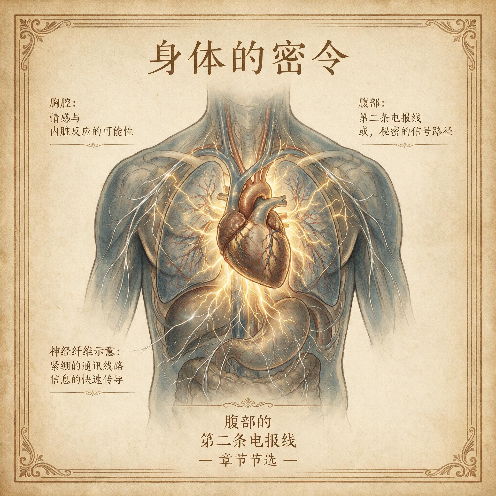

第 11 章
腹部的第二条电报线
腹泻是最急于被隐藏的身体反应之一，但它首先不是一个错误。它是一场由腹部自主下达的强制清退令，痛苦感本身就带着命令的语法：停下，清空，不要耽搁。如果要在身体的诸多不适信号里寻找一个最

焦虑时的心跳加速：胸腔内心脏搏动特写
AI 生成插图，非史实影像。
不肯商量、最不顾脸面的执行者，腹泻大概会排在最前面。
正因如此，它常常被当作纯粹的故障，被止泻药、偏方和羞耻心草草处置。可有意思的是，在南加州大学科学家2020年8月报告的那份症状顺序分析里，呕吐通常先于腹泻，发烧和咳嗽则更早出现。研究者把一种新发呼吸道疾病的早期表现放回到时间线上，试图从纷乱的临床症状里找出可辨识的秩序。腹泻在序列末端出现，不是无关的收尾，而是身体在防线被突破后启动的最终清场程序。
这恰好接续了上一章留下的问题。心慌是一种常备战的电报，呼吸急促、心跳加快，都是备战程序在身体里的回响。如果这样的备战状态迟迟无法解除，大脑反复发出的危险信号就会沿着迷走神经向南方传递，最终抵达胃肠道。胃肠不是被动的终点站，它有自己的判断系统，有自己的历史。
接下来要看清的是，当那条下行电报到达腹地之后，身体为什么选择了如此剧烈、如此不体面的执行方式。答案不在消化功能本身，而在一条更古老的生存逻辑里。
要把这件事想通，先得放弃把肠道想象成一条温顺传送带。我们习惯认为肠道只是负责研磨、消化、吸收，把剩下的废物挤压成粪便排出。
但这套图像遗漏了一个关键事实：肠道的内部世界，其实是身体与外部环境之间面积最大的一道边境。食物、水和微生物从口进入，穿过这条长长的管道，其中只有极小一部分真正被允许进入血液和淋巴。肠道内壁的细胞紧密排列，构成一道只能选择性放行的关卡。
同时，肠道里居住着数量惊人的微生物，其中有些是盟友，有些是机会主义者，还有些是明确的入侵者。
边境线上不可能只靠远在颅腔的大脑逐项决策。等到大脑看清楚敌人再下令，细菌可能已经越过肠壁，进入了全身循环。
所以肠道发展出了自己的本地防御网络。有些神经科学家喜欢把它叫作“第二大脑”，这个说法准确但不完整。
肠壁内分布着上亿个神经元，构成一套能够独立感知、独立判断、独立启动反射的神经系统。它不思考，不计划，不写诗，但它能执行一套经过漫长演化打磨的生存动作。当某块腐肉上携带的致病菌穿过胃酸屏障，附着在肠壁并开始增殖时，肠道神经系统会先于意识捕捉到变化。这些变化包括细菌产生的毒素、肠壁受到的异常化学刺激，以及局部免疫细胞发出的警报。
随后，肠道会做出一项决定：不再慢慢消化，而是立刻把整段内容物和附着在肠壁上的威胁一起冲走。
具体动作是清楚而暴烈的。肠壁平滑肌开始剧烈收缩，正常的节律性蠕动被一连串急促、不规则的推进波取代，内容物被高速推向远端。
肠上皮细胞不再只吸收水分，而是反过来向肠腔大量分泌液体。大量液体混合着未被吸收的食物残渣、细菌和毒素，形成稀薄的水样便。这个过程的直觉很像处理一条被污染的水管：你不再关心管道里的东西能不能慢慢排空，而是打开最大水流，把内壁上的污物全部冲刷掉。
腹绞痛就是肠壁肌肉在全力收缩时发出的机械信号，排便的紧迫感来自局部张力和神经反射的共同作用。痛苦并不是这次清场行动的副产品，恰恰相反，它保证了这条指令不会被人忽视。如果没有绞痛、没有肛门和腹部的强烈不适，人会继续忙手上的事，等待下一次排便时机。那样的话，病原体就获得了在肠道里站稳脚跟的额外时间。
这套反射并不只是一个孤立的肠道事件。它由肠壁神经系统发起，免疫细胞和肠内分泌细胞参与协调，再通过迷走神经向大脑报告。迷走神经从脑干延伸出来，一路穿过胸腔和腹腔，把心脏、肺、消化道和许多内脏器官的状态持续传送回中枢。
它是身体内部最重要的一条双向通讯干线。腹泻发生前后，这条干线上来来往往的信息会改变很多行为。
大脑收到肠道正在清场的报告后，会失去食欲，会感到疲倦，会倾向于卧床不动，也会记住不久前吃下或喝下的可疑东西。一个人腹泻时的疲惫和厌食，不是外周脱水的简单后果，而是中枢神经系统把能量和注意力从进食转向防御的完整安排。
肠道和大脑之间的这条电报线，并不是单向的告状热线。大脑同样可以通过迷走神经的传出纤维和体液信号改变肠道的运动、分泌和局部免疫状态。
这就是为什么人在极度紧张时真的可能突然腹泻，或者在焦虑时感到腹部翻搅。它并不是“想象出来的”，而是大脑把某个关于危险或压力的判断发送给了肠道，肠道则按照自己的古老逻辑执行了回应。
在危险来自食物的时代，这套联动极度有效：大脑一旦得到肠道感染的情报，就降低进食欲望，减少活动，让身体专心清场；同时，对可能受污染区域产生厌恶感，避免二次摄入。肠道一旦收到大脑的紧张信号，也会提前进入警觉状态，加快运动和分泌，为可能的毒素暴露做好准备。
这种脑肠联动曾经是统一的防御行动。现在必须面对那个合理的怀疑：如果腹泻会导致脱水、电解质紊乱，有时甚至会致命，它怎么能算是进化塑造的适应性指令，而不是一个失败的进化副产品？这个怀疑并非无的放矢。
在烈性肠道感染中，尤其是霍乱这样的疾病，过度水样便的确可能在很短时间内把人推向休克和死亡。把这样的反应称为“保护”，听起来像是给一场灾难强行加上正面意义。
但自然选择不要求一个程序在每次执行时都成功，也不要求它永远温和无害。它只要求这个程序在远古环境的统计意义上，使拥有者比没有者更有可能活到生育年龄。
在没有静脉补液、没有现代医疗的漫长年代里，病原体一旦突破肠道屏障，全身性感染的风险极高。与细菌进入血液后引发的败血症相比，短时间的猛烈腹泻虽然痛苦且可能危险，但清除了局部感染源，降低了全身扩散的概率。
痛苦感则进一步强化了行为后果：腹泻发作的人会远离正在发酵的食物，会对某种食物的味道产生持久的警惕，会在身体虚弱时寻找安全的休息地点。这些都是从同一条指令中长出来的保护行为。
这套系统为什么会在现代生活里变得如此容易误报？答案不在于肠道神经系统的设计者突然犯了错，而在于它仍然在使用一套古老的地图。
现代人生活的世界里，急性肠道感染不再是日常最高频的威胁，但原本负责应对这种威胁的预警系统并没有被删除。它还在识别“入口物质是否有害”，还在必要时启动清场。
新的麻烦是，现代生活制造出了大量让它紧张、却无法被冲刷掉的刺激物。比如，高糖高脂的加工食品、酒精、人工甜味剂和添加剂，会改变肠腔内的渗透压和信号分子谱，可能被局部感觉神经解读为某种需要警惕的异常。抗生素的广泛使用则推倒了肠道原有的菌群格局，使免疫细胞和神经末梢突然暴露于陌生的化学环境。它们会把菌群格局的剧变当作边境骚乱，提高警觉基线。
长期心理压力则从另一头下手：大脑反复传来的戒备信号，让肠道运动节律紊乱、痛觉阈值下降。
于是，没有病原体，没有毒物，只是一点轻微的食物摩擦，一丝正常的肠胀气，或者一次小小的情绪波动，都可能触发完整的清洗反射。肠易激综合征里那种没有感染却反复发作的腹泻和腹痛，正是误报系统的典型产物。这不是在说肠易激综合征患者的痛苦不真实。
恰恰相反，误报机制的一个重要特点是，身体无法区别真正的病原体和被称为“病原体”的相似噪声。肠道神经系统没有意识审查部门，无法进行一次哲学层面的再确认。它接收到符合入侵特征的信号模式，就照章办事。腹泻是真的，绞痛是真的，脱水和虚脱也是真的。只是触发它们的不是外部敌人，而是一个被放大了的、被曲解了的内部警报。
对许多人来说，这种痛苦还被社会压力加倍放大。他们必须在考试、通勤、会议和社交活动中突然冲向厕所，或者因为害怕找不到厕所而回避出行。身体试图保护他们，却把他们关在了一个由误报构成的牢笼里。
还需要更仔细地看菌群这个变量。肠道并非无菌战场。健康肠道里定居着成百上千种微生物，它们与肠道免疫细胞和神经末梢相互熟悉，形成一种动态平衡。肠道神经系统习惯了这个群落的化学信号，就像一个人习惯了邻居夜里偶尔传来的低声响动。当饮食结构剧变、抗生素杀灭大片微生物，或者感染打破群落组成，那些熟悉的信号就会消失或改变。
肠道神经系统和免疫细胞会突然面对许多“生面孔”，其中一些可能真的有害，另一些只是陌生。于是警戒水平被调高，过去被忽略的轻微刺激现在也会引发过度反应。现代饮食中低纤维、高糖、高饱和脂肪的结构，又让群落恢复变得缓慢而不彻底。肠道长期处于半警戒状态，没有敌人可供清除，却始终无法完全放松。身体用腹泻、腹胀和腹痛表达它对这种状态的不适应。
到这里，一个更深的后果浮现出来。腹部的不适信号并不只是在腹部停留。它沿着迷走神经和炎症因子进入大脑，改变情绪和认知。频繁的腹泻和腹痛会产生一种持续的、低度的感觉输入，像一条背景噪音始终无法关闭的电报线。大脑长期收到来自腹部的负面报告，即使每次报告都不构成致命威胁，也会逐渐让人变得焦虑、易怒、对轻微压力反应过度。
于是，一个令人疲惫的循环出现了：肠道的误报引发不适，不适引发焦虑，焦虑又通过脑肠通路加重肠道敏感。人不只是因为肠道症状而痛苦，还因为这些症状持续向他报告一个并不安全的世界。
这个循环之所以难以打破，部分原因是科学还不能把所有中间环节完全说清。肠道菌群的代谢产物确实可以影响神经递质前体的水平，某些菌群构成与焦虑、抑郁症状存在相关，粪便菌群移植在动物实验中能够改变行为表现。但要把一条从肠道微生物到特定情绪的完整因果链钉死，目前仍然做不到。这并不让人扫兴，反而说明身体里的这条通讯线路比我们曾经以为的要复杂得多。
我们能确定的是，肠道炎症、菌群改变和慢性压力可以相互作用，并通过迷走神经和免疫信号影响大脑。具体每一步如何翻译、如何放大，还有很多边界没被照亮。
如果把镜头拉远，会看见一个更完整的图像。肠道从来不是单纯的消化管，而是免疫防御、微生物谈判和情绪感知交汇的前线。腹泻在急性感染中是一场高代价的救援，在慢性压力中却可能成为一种无差别的自我惩罚。它不是某个器官坏了，也不是某个神经反射天生愚蠢，而是因为人类快速改变了环境，却没有改变这套反射的底层逻辑。
在那些被压力浸透的早晨，肠道常常先于意识做出反应。一个住在城市里的年轻人在地铁上收到一条工作消息，通知下午临时汇报。他刚喝下一杯含代糖的冰咖啡，早饭只吃了几块高糖饼干。胃里没有细菌，肠内却开始发出警告。工作消息启动了脑内的应急程序，冰咖啡和饼干则制造了温和的化学刺激。两种信号在迷走神经上叠加，肠道收到的不是一份明确的毒物报告，而是一堆模糊的危险特征。它没有时间分辨，只按老规矩清场，于是他不得不在最近的一站冲出车厢寻找厕所。排空之后，虚弱和干渴让他更加紧张，因为汇报还在等着他。
这种叠加信号在远古环境里并不常见。狩猎采集者遇到危险时会逃跑或躲藏，肠道多在真正的毒物暴露后才启动清场；即便在较晚近的农耕社会里，紧张与进食也很少像今天这样紧密并置。
现代生活却让它们成了常态：人们边看消息边吃饭，边赶路边喝含糖饮料，在抗生素疗程结束后立刻回到高糖高脂的加工餐食中。肠道古老的识别系统从未进化出处理这类组合的能力。
它不是坏了，而是在一个从未被训练过的环境里，沿用旧的判断标准。于是，本应偶发的清场反射被反复触发，肠壁长期处于半警戒状态。体检报告上可能没有明显炎症，但肠壁的免疫细胞和神经末梢已经疲惫不堪。某些日常食品的化学信号逐渐被记作危险模式，不是因为它含有毒素，而是因为它总是与紧张、疲劳和排便紧迫同时出现。
过去肠道的化学感受器习惯于粗糙纤维、缓慢发酵的植物成分和相对稳定的菌群代谢物。现在，人工甜味剂、乳化剂和高浓度糖分迅速改变肠腔内的渗透压和信号谱，刺激局部神经和免疫细胞。这些刺激并不构成感染，但对肠道防线来说，它们像一连串来路不明的敲门声。肠道没有相应的新词汇来描述它们，只能把最接近的旧标签贴上去：潜在入侵者。于是，哪怕在没有病原体的情况下，腹胀、肠鸣和紧迫便意也可能被触发。
另一个常见的触发路径来自抗生素。一个中年人因为一次链球菌感染使用广谱抗生素，感染好转后却开始反复腹泻。他并没有再次感染，只是肠道里原住民菌群被大面积杀灭，熟悉的气味和信号不再定时出现。免疫细胞把这种空旷又陌生的环境当成边境真空，担心有入侵者乘虚而入，于是上调警戒。等他恢复饮食后，哪怕一点正常发酵产生的气体，都可能被解读成需要清场的信号。肠道在重建菌群期间经历的这种脆弱期，往往比感染本身更漫长。低纤维、高糖的现代饮食又拖慢了菌群恢复，使半警戒状态迟迟无法解除。
这种误报一旦形成，就会开始左右人的日常选择。那个年轻人可能开始避开没有厕所的地铁线路，提前一小时出门，只走有商场洗手间的固定路线；也可能不再喝冰咖啡，却在每次路过咖啡店时感到莫名的紧张。
身体的保护没有消除威胁，反而让他的世界一点点缩小。更糟的是，这种缩小和紧张会通过迷走神经传回肠道，让它在下次进食时更过敏。腹痛和腹泻引发害怕，害怕让大脑发出更多应激指令，这又让肠道在下次用餐或下次紧张时更不得安宁。
一个人不是因为肠道感染而虚弱，而是被自己反复清空带来的消耗所困。腹部的清场系统没有失职，只是它已经无法把真正的敌人从现代生活持续不断的噪声中分离出来。
它试图保护一个人免受想象中的毒物，却让他在真实的人群中因失态而更焦虑，因焦虑而更频繁地跑向厕所。这样的循环不限于腹部。当一个人反复经历腹泻和腹痛，他的大脑会长期收到来自腹部的负面报告，对食物环境和外界安全做出偏移判断。他可能在一个食物充足的世界里，仍然觉得每一餐都暗藏风险。这种不信任会在身体里积存下来，悄悄改变他对食物的反应和进食后的状态。腹部发出的清场命令，不再只是清空肠道，更在暗中改写着一个人与食物世界的关系。身体没有背叛它的保护程序，只是在一个已经被加工食品、抗生素和慢性压力改变的环境中，这份忠实成了一种无法谈判的惩罚。
现代社会提供的水源消毒、食品保鲜和抗菌药物，大大降低了烈性肠道感染的概率，这本是文明对身体的巨大减负。可是同一套防御系统，又暴露在前所未有的慢性噪声里。
压力不再来自密林深处的猛兽，而来自手机屏幕上的一条消息、一次没有准备好的谈话、一段无法安放的紧张。大脑把这些社会威胁放在古老的应急分类里，并通知肠道做好战斗准备。肠道接到通知后，认真执行了那条古老的清洗命令。
食物不是敌人，但身体没有更新的语法来辨别这一点。正是在这样的错配里，腹泻从一个保护性反射，变成了一种慢性消耗的源头。
一个人在重要场合突然腹痛跑厕所，会因为失态而更加紧张，紧张又会让肠道更加活跃。他可能开始害怕某些食物，害怕没有厕所的路线，害怕那些曾经很普通的生活场景。身体本来想为他清出安全空间，却把他从日常世界里清了出去。那些由远古的腐肉、寄生虫和不洁饮水训练出来的反应，放在一个被压力、加工食品和抗生素包围的现代人身上，变成了另一种不必要的痛苦。
身体还是忠实的，它仍然按照老规矩办事，只是世界已经不再按老规矩出牌。最令人疲惫的地方或许在这里：当肠道这条第二条电报线频繁误报，它不仅制造局部的腹痛和腹泻，还可能通过肠脑轴干扰全身的能量感知和进食判断。消化系统反复清场之后，身体会把某种不安稳的经验沉淀下来，在行为上更倾向于把食物环境视为不可靠、不可预测。即使身处一个食物过剩的世界，一个反复腹泻的人也可能在吃饭前感到隐隐的恐惧，或者在饭后陷入不正常的疲惫。
古老边境上的哨兵，把丰富的现代餐桌看成了一条充满不确定性的河岸。它在努力守护，却只能用痛苦来证明自己的存在。这不是某一顿腐肉造成的后果，而是一整套古老保护程序被错误触发、反复触发之后，在人的身体里留下的长远回声。